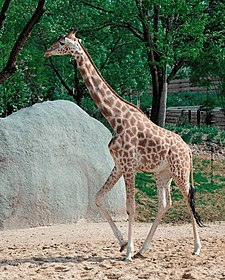
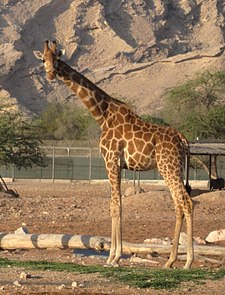
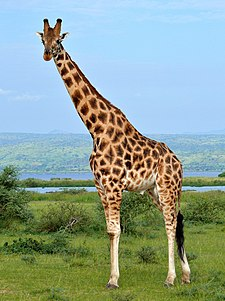
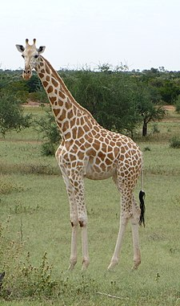
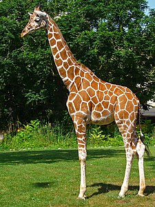
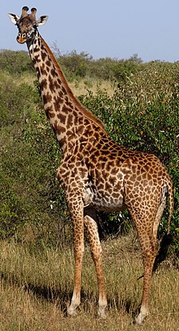
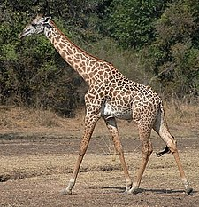
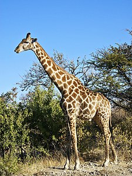
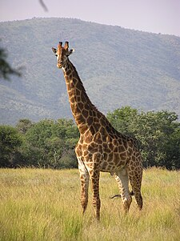

"A giraffe is a large fleet African ruminant mammal (Giraffa camelopardalis) that is the tallest of living quadrupeds and has a very long neck and a short coat with dark blotches separated by pale lines" (Mirriam-Webster).
A hoofed animal, distingushed by their distintive coats, horn-like ossicones, and long neck.
Currently, there are four extant species of giraffe, all told apart based on their coat patterns:
| Name | Subspecies | Images |
|---|---|---|
| Northern Giraffe - Giraffa camelopardalis | Kordofan Giraffe - G. c. antiquorum
Nubian Giraffe - G. c. camelopardalis Rothschild's Giraffe - G. c. rothschildi West African Giraffe - G. c. peralta |
 |
| Reticulated Giraffe - Giraffa reticulata | Somali Giraffe - G. c. reticulata |  |
| Masai Giraffe - Giraffa tippelskirchi | Masai Giraffe - G. t. tippelskirchi
Thornicroft's Giraffe - G. t. thornicrofti |
 |
| Southern Giraffe - Giraffa giraffa | Angolan Giraffe - G. g. angolesnsis
South African Giraffe - G. g. giraffa |
 |
There are seven extinct species of Giraffe.